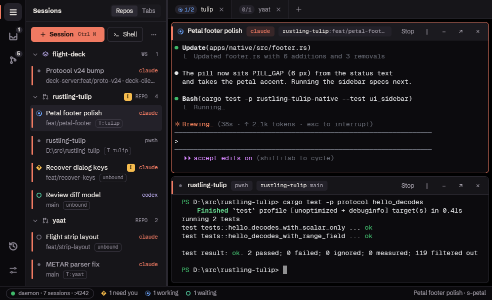
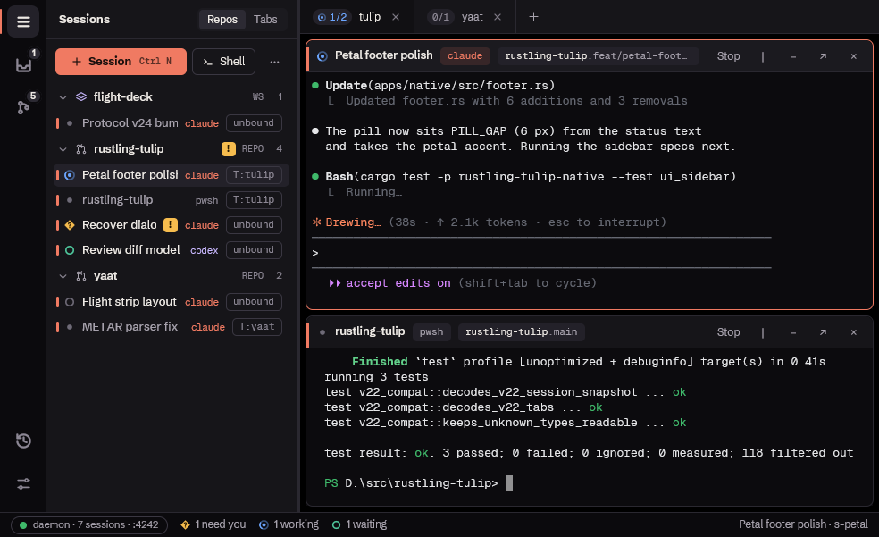

Sidebar display options RT-397 · RT-396
Every lane is the same sidebar (280 px, today's default width) over the same sessions, drawn with the client's palette and Geist. Pick one option per section.
Today

main
main-compactSame data in every lane: workspace opening-hand + rules (1 idle session) · repo gate (no live session) · repo yaat (1 working, 1 finished unseen) · repo rustling-tulip (1 working with subagents, 1 needs you, 1 idle pwsh shell cd'd into apps\native). Manual order: workspace, gate, yaat, rustling-tulip.
ADensity
Repos show every session; subagents off.
BWhat a repo shows under it
Comfortable density; subagents off.
CSubagent tree under a session
Comfortable; only the rustling-tulip repo is open so the tree has room. "Sidebar display mock" runs Explore (which spawned two Explores, one of which went two levels deeper) and code-review.
DFilter and sort
All / Active only switch (RT-396), shown switched to Active
Active = a live shell or agent session in the repo's folder or below it. gate has none, so it hides.
Sort, shown as its result
Folded containers so the order reads at a glance, except the repo that leads.